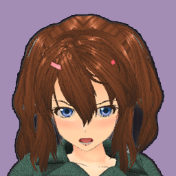
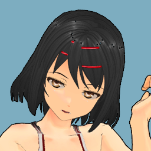
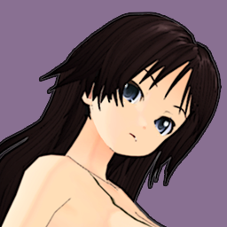
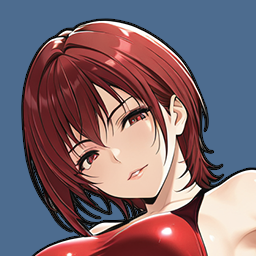
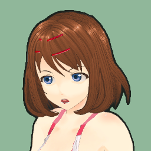
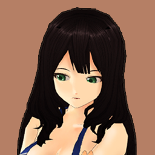
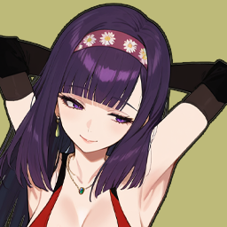
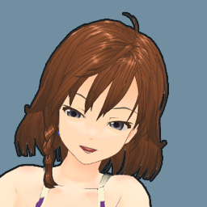
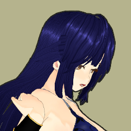

A
Depth Ledger
元のプロフィール量を保ったまま、団体を縦比較しやすい台帳型に再構成。
1st百獣館842
-134pt
Playerファイヤーガールズ708
Profile
顔アイコンで戦力層を見せる団体プロフィール
1位ほど顔が多く、4位ほど空きスロットが増える。
1
S Tier21名王者保持
百獣館
王者を中心に95超えの怪物級が続く絶対王者。トップ層、基礎戦力、人気のすべてが厚く、追う側に明確な壁を作っている。
主力層 9/9100+ / 95 / 92 / 84 / 83 / 80台多数
 100
100
 95
95
 92
92

84 83 81
81

80 79
78
79
78
Rating
842
Base
681
Avg OVR
81
Form
+12
Legacy
50
Heat
Fire

Champion Ace
相田 美朱 / OVR100
5防衛中。エースだけでなく2番手、3番手も強く、層の厚さで首位を守る。
2
Player17名追走中
ファイヤーガールズ
首位との差は134pt。トップの破壊力は百獣館に劣るが、主力の人数と勢いは十分で、上位戦次第で差を詰められる。
主力層 7/985 / 82 / 79 / 77 / 74台。空き2枠が補強課題。

85 82
82
 79
79
 77
77
 74
74
 73
73

72Rating
708
Base
632
Avg OVR
76
Form
+8
Legacy
28
Heat
Hot

Board Ace
八重樫 桜子 / OVR85
突出した怪物はいないが、主力が横に並ぶ。2枠の補強余地が戦略ポイント。
3
A Tier15名王者保持
ノヴァインパクト
王者の存在感は強いが、2番手以降の厚みでは2位に届かない。若手主体の攻撃力で巻き返す団体。
主力層 5/9王者依存が強く、厚みはまだ発展途上。

86 81
81

78
75
72Rating
654
Base
594
Avg OVR
73
Form
-4
Legacy
30
Heat
Warm

Champion Ace
伊勢原 凛 / OVR86
王者は強い。だが空きスロットが多く、団体プロフィールとしては伸びしろが目立つ。
4
B Tier12名小規模
なでしこプロレス
人数は少なく、戦力層は薄い。ただし対戦ptは上向きで、堅実な育成路線が見える地方団体。
主力層 3/9顔が少ないことで、上位との差が一目で出る。
76
 71
71
71

69Rating
521
Base
498
Avg OVR
68
Form
+8
Legacy
15
Heat
Calm

Board Ace
吉野 蓮 / OVR76
トップ選手の看板はあるが、主力枠の空きが多い。育成・補強の必要性が伝わる。